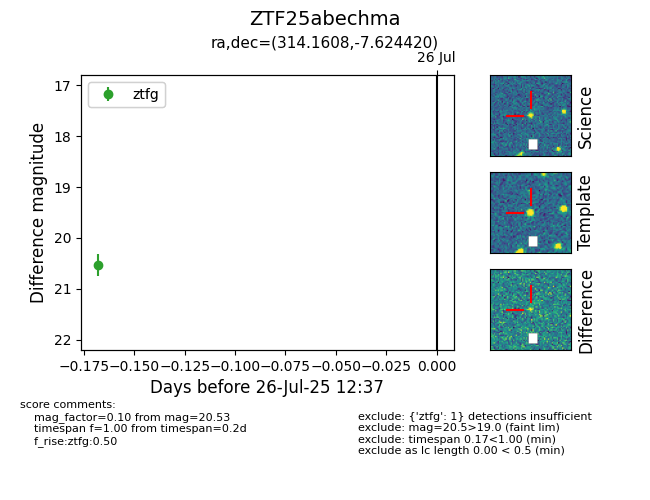

Target ZTF25abechma at 2025-07-26 12:37, see:
FINK: fink-portal.org/ZTF25abechma
Lasair: lasair-ztf.lsst.ac.uk/objects/ZTF25abechma
ALeRCE: alerce.online/object/ZTF25abechma
alt names
ZTF25abechma (ztf,fink)
coordinates:
equatorial (ra, dec) = (314.1608,-7.62442)
galactic (l, b) = (40.7794,-31.25143)
photometry
last ztfg=20.53
1 ztfg detections
